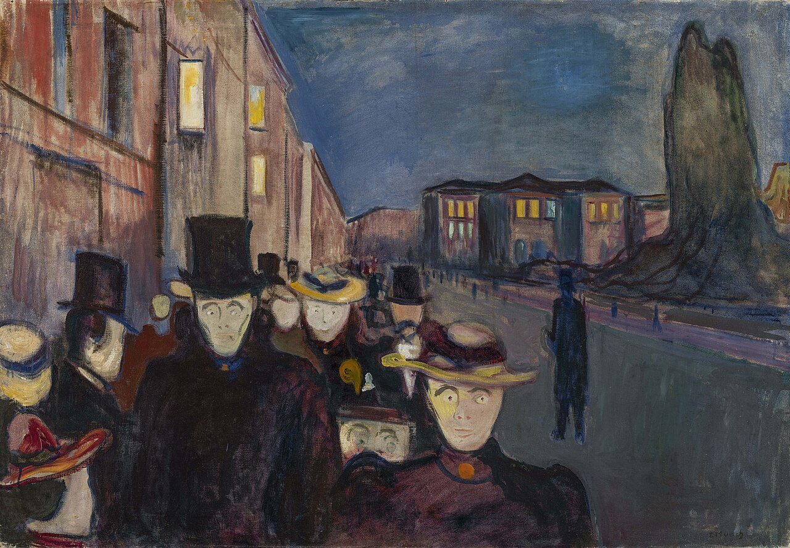
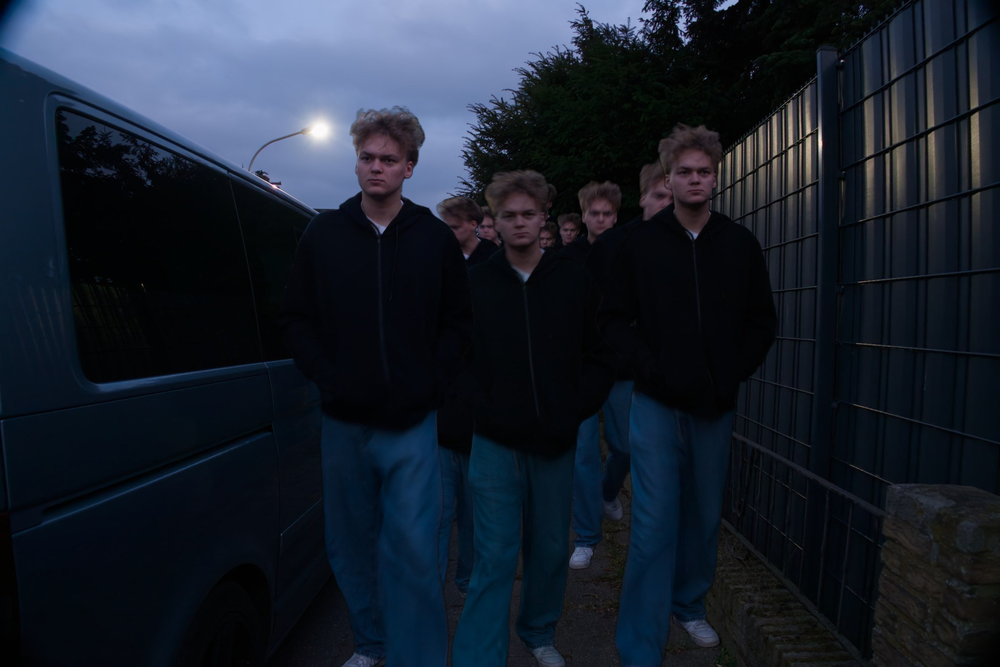

Kunst Q1 · Inszenierte Fotografie · nach Edvard Munch
Schieb den Regler oder nutz die Pfeiltasten ← →, um die Ebenen nacheinander aufzubauen. „3D“ fächert den Stapel räumlich auf, „Solo“ hebt die oberste Ebene hervor.
C · Bildvergleich
ALT ↔ NEU
Das historische Gemälde und die eigene Fotografie im direkten Vergleich. Mit dem Regler im Bild lassen sich beide übereinanderschieben.


ALT · 1892NEU · 2026
D · E · Prozess
Vom Gemälde zum Foto
Die sechs Arbeitsschritte mit Recherche, Analyse und Entscheidungen.